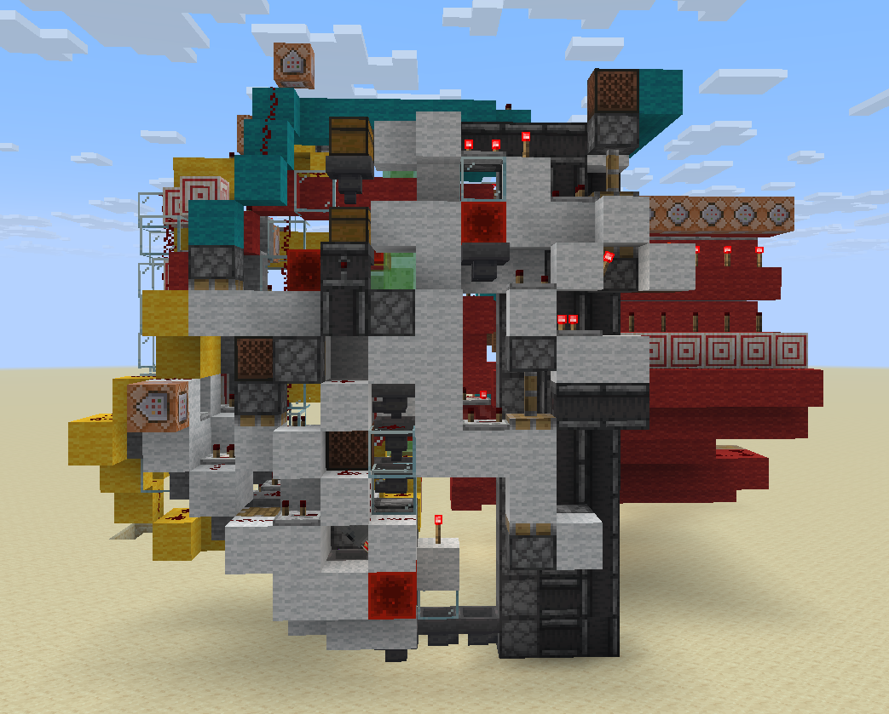

Designing the Smallest computer in Minecraft
Introduction
In the 14 years since redstones introduction to Minecraft made computation possible computers in game have mostly gone one direction, growing faster, more capable, and primarily larger. Whille a computer that can run its own 3d render pipeline in game is impressive, the fact that it will take up a million blocks and lag your computer to death if it is not in a blank void kind of makes it a self defeating exercise. What is the point of making a computer in Minecraft if you can't build it in a normal world by mining or crafting? My goal was to create the exact opposite, build the smallest turing complete Minecraft computer possible, one that could be built in survival, and even potential power your farms and storage systems without being a build unto itself.
When I first got this idea for a project the first place I turned for inspiration was the past. I started looking into some of the smallest and simplest computers ever commercially made and eventually landed on the the aptly named MC14500B. The MC14500B is absurdly simplistic by todays standard, boasting a 4-bit ISA, and a simple 1-bit register it is only capable of a handful of logical operations and a couple of options for control flow, but yet it was just enough to replace old bulky relay logic systems in the 70's.
The idea of a 1-bit logic controller based computer fit Minecraft perfectly. In Minecraft we are operating under very similar constraints Motorola faced in the 70's when producing this chip. Memory is expensive, wide busses are awkward, and for most simple practical tasks you only need a little bit of binary logic. Of course I could not just copy the MC14500 and call it a day, while the MC14500 was the perfect place to draw inspiration, on its own it was not even close to a full computer. Part of its simplicity was eschewing everything but the bare minimum, relying on the designer to provide what they needed in program memory, instruction control flow, I/O was handled. All of these I would need to implement on my own, in a way that was particularly ergonomic with Minecraft mechanics.
After a few weeks of work and many iterations this idea would finally come into being as the MC^2, short for MineCraft MicroController, a 1-bit Haravrd architecture computer with a 4-bit music disc encoded ISA, 8 ports of I/O, just enough control flow and binary logic to handle some small farms and be turing complete while fitting in a foorprint barely larger than a chunk.
Design Overview
At its core the MC^2 is an incredibly simple design: a single 1-bit register, a 4-bit instruction set, a few configurable I/O lines, and some working memory implemented as a kind of moving tape. If you were doing this on an FPGA it would be a nice little final-project CPU build. In Minecraft, the real challenge is making it small without making it useless.
I ended up breaking it down into four core pieces:
- Instruction Memory – dense, fast program storage using jukeboxes and shulker boxes.
- Logic Unit – the part that actually executes the 1-bit instructions.
- I/O – handles the interface between MC^2 and the outside redstone world.
- Tape Memory – a shiftable strip of bits for data storage, essential for turing complete operation but can be eschewed for more I/O

Instruction Memory
One of the biggest challenges was the implementation of efficient instruction memory. Using the Jukebox as a decoder we can store a single 4-bit digit as a single item inside a shulker box inside a chest, providing us with plenty of instruction memory to actually write useful programs, with a decently fast read rate on top. But there is no such thing as a free lunch, and there is a good reason why no computer until now have used Jukebox encoding and their main program memory. While it is dense and fast, the fact that our memory is encoded as physical item in chest means that we are limited to the First in - First out read order that hoppers give us, in other words we cannot have any jumps in our program.
